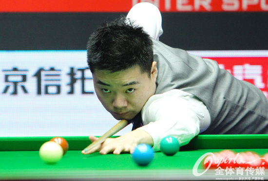
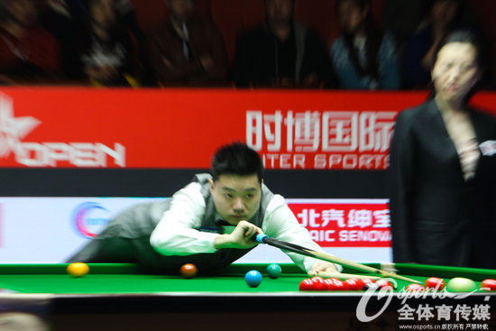
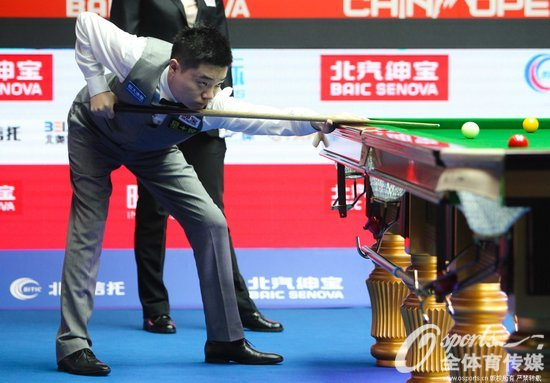
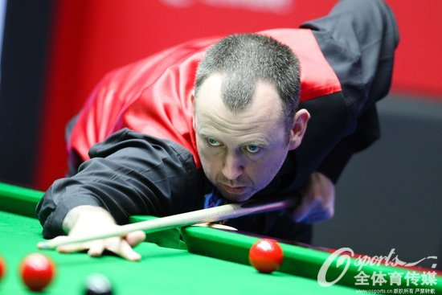

北京时间4月2日晚，2015年世界斯诺克中国公开赛继续进行。在1/8决赛中，卫冕冠军丁俊晖继续保持良好的手感，5-2力克金左手马克-威廉姆斯，挺进8强。下一轮丁俊晖的对手是希金斯。

前两轮，丁俊晖以两个5-1先后击败坎贝尔和马克-戴维斯，将今年六次一轮游的阴霾一扫而光，在喜庆的气氛中迎来自己的28岁生日。

赛后，丁俊晖说：“其实我和他的交手战绩我一直是比较占优势，今天打得比较有信心，其他也没什么原因了。”

在下一场比赛中，丁俊晖的对手是老将希金斯。“赛季到了这个时候，丁俊晖找到了手感，时机实在是太好了。此前，我曾经输给过丁俊晖，能够在这样的情况下受到这样的挑战，尤其是观众会偏向丁俊晖，我很期待这场比赛。”希金斯说道。